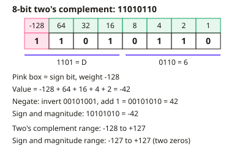

A-level Computer Science Year 13 · Topic 12
Data representation and Boolean algebra
Data representation and Boolean algebra at A2 level goes deeper into how numbers and logic are handled.
We will work with signed integers, floating point representation, normalisation and arithmetic, and bitwise operations.
Then we cover character sets and data types, logic gates and De Morgan's laws, Karnaugh maps, adders and flip-flops.
- 8 subtopics
- 497 questions
- Free: 12.1 notes and 10 questions
In this topic
- 12.1Number bases and signed integers: binary, hexadecimal, sign and magnitude, two's complementFree below · 72 questions
- 12.2Floating-point representation and normalisationOpen in Full Marks · 62 questions
- 12.3Floating-point arithmetic, rounding errors and precisionOpen in Full Marks · 66 questions
- 12.4Bitwise manipulation, shifts and masksOpen in Full Marks · 60 questions
- 12.5Character sets (ASCII, Unicode) and primitive data typesOpen in Full Marks · 70 questions
- 12.6Logic gates, Boolean expressions and De Morgan's lawsOpen in Full Marks · 56 questions
- 12.7Boolean simplification and Karnaugh mapsOpen in Full Marks · 54 questions
- 12.8Half and full adders and D-type flip-flopsOpen in Full Marks · 57 questions
12.1 · Free notes
Number bases and signed integers: binary, hexadecimal, sign and magnitude, two's complement

Key points
- Binary is base 2 and hexadecimal is base 16. A place-value table (128, 64, 32, 16, 8, 4, 2, 1 for 8 bits) is the standard method for converting to denary.
- Denary to binary: subtract place values from the largest downwards, or use repeated division by 2 and read the remainders upwards. For example, 45 = 00101101.
- One hex digit represents exactly 4 bits (a nibble): 0-9 then A=10 to F=15. Convert binary to hex by grouping in 4s from the right, e.g. 1011 0110 = B6.
- Hex is used because it is compact, easier for humans to read and less error-prone than long binary strings. The computer still stores everything in binary.
- Unsigned n-bit integers range from 0 to 2^n - 1, so 8 bits gives 0 to 255.
- Sign and magnitude: the most significant bit (MSB) is the sign (0 = positive, 1 = negative) and the other bits hold the magnitude. The 8-bit range is -127 to +127, and there are two representations of zero (00000000 and 10000000).
- Two's complement: the MSB has a negative place value (-128 in 8 bits). The range is -2^(n-1) to +2^(n-1) - 1, so -128 to +127 in 8 bits, with one zero.
- To negate in two's complement, invert all bits then add 1. For example 35 = 00100011, so -35 = 11011101. To find the value of a negative pattern, add the weights, using -128 for the MSB.
- Subtraction is done by adding the two's complement of the second number, discarding any carry out of the MSB. Two's complement is preferred because the same adder circuit handles addition and subtraction.
- Overflow occurs when the true result lies outside the range. Two positives giving a negative (or two negatives giving a positive) signals overflow.
- Sign extension: to widen a two's complement number, copy the sign bit into the new high-order bits. An arithmetic shift right keeps the sign bit and halves the value, while a left shift doubles it.
In more detail
- Worked conversion: 2F₁₆ = 47 = 00101111, so −47 in 8-bit two's complement is 11010001.
- Worked sign and magnitude: −47 = 10101111; zero has two forms, 00000000 and 10000000.
- Worked overflow: 01100100 (100) + 01000110 (70) = 10101010, a negative result from two positives, so overflow has occurred (170 > 127).
- Worked subtraction: 50 − 75 = 00110010 + 10110101 = 11100111 = −25.
- Worked range: 12-bit two's complement covers −2048 to +2047.
Practice
Number bases and signed integers: binary, hexadecimal, sign and magnitude, two's complement: 10 questions
Pick an answer to check it, or open the answer for the explanation.
1. Convert the binary number 10110110 to hexadecimal.
- D6
- A6
- 6B
- B6
Show answer
D: B6. Split into nibbles 1011 and 0110. 1011 = 11 = B and 0110 = 6, so the answer is B6.
2. What is the hexadecimal number 3F in denary?
- 15
- 51
- 48
- 63
Show answer
D: 63. 3 × 16 = 48, and F = 15, so 48 + 15 = 63.
3. What is -35 in 8-bit two's complement?
- 11011100
- 10100011
- 11011101
- 00100011
Show answer
C: 11011101. 35 = 00100011. Inverting gives 11011100, and adding 1 gives 11011101. 10100011 is the sign and magnitude form.
4. What range of integers can be stored in 8-bit two's complement?
- -127 to +127
- -128 to +127
- -128 to +128
- -127 to +128
Show answer
B: -128 to +127. The MSB has weight -128 and the other bits add at most 127. The range is therefore -128 to +127, with one zero.
5. A system stores integers in 8-bit sign and magnitude. What is the smallest value it can store?
- -126
- -127
- -255
- -128
Show answer
B: -127. One bit is the sign, leaving 7 magnitude bits that give a maximum magnitude of 127. The smallest value is -127.
6. Which statement about sign and magnitude and two's complement is correct?
- Sign and magnitude can store one more negative value
- Both have exactly one zero
- Sign and magnitude has two representations of zero
- Two's complement has two representations of zero
Show answer
C: Sign and magnitude has two representations of zero. Sign and magnitude has +0 (00000000) and -0 (10000000). Two's complement has a single zero and one extra negative value.
7. Using 8-bit two's complement, 53 - 20 is calculated as 53 + (-20). What is the 8-bit result?
- 00100001
- 01000001
- 11011111
- 00110101
Show answer
A: 00100001. -20 = 11101100. 00110101 + 11101100 = 1 00100001. Discard the carry to leave 00100001 = 33.
8. In 8-bit two's complement, 01100100 + 01000000 (100 + 64) is calculated. What happens?
- Overflow: 10100100 is read as -92
- The correct result 164 is stored as 10100100
- Underflow: the result is -164
- The carry is lost harmlessly so the answer is 36
Show answer
A: Overflow: 10100100 is read as -92. 164 is above +127, so the result 10100100 has the sign bit set and reads as -92. Two positives giving a negative signals overflow.
9. Why is hexadecimal often used instead of binary to display memory addresses?
- Hex arithmetic is faster for the processor
- Computers store data in hexadecimal internally
- Each hex digit is exactly 4 bits, so it is shorter and less error-prone
- Hex can show negative numbers without a sign bit
Show answer
C: Each hex digit is exactly 4 bits, so it is shorter and less error-prone. One hex digit represents a nibble, so values are far more compact and easier for humans to read. Hardware still uses binary.
10. The 8-bit two's complement value 11110110 (-10) is sign-extended to 16 bits. What is the result?
- 1111111100000110
- 1000000001110110
- 0000000011110110
- 1111111111110110
Show answer
D: 1111111111110110. Sign extension copies the sign bit (1) into the new high bits, giving 1111111111110110, which is still -10.
Keep going in Full Marks
Full Marks has 72 questions on Number bases and signed integers: binary, hexadecimal, sign and magnitude, two's complement (62 more than here), set out in practice levels. You also get notes and 3D models for all 8 subtopics of Data representation and Boolean algebra, plus games, timed exams and past papers.